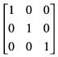

CGAffineTransform Reference
| Framework | ApplicationServices/ApplicationServices.h |
| Companion guide | |
| Declared in | CGAffineTransform.h |
Overview
The CGAffineTransform data structure represents a matrix used for affine transformations. A transformation specifies how points in one coordinate system map to points in another coordinate system. An affine transformation is a special type of mapping that preserves parallel lines in a path but does not necessarily preserve lengths or angles. Scaling, rotation, and translation are the most commonly used manipulations supported by affine transforms, but skewing is also possible.
Quartz provides functions that create, concatenate, and apply affine transformations using the CGAffineTransform data structure. For information on how to use affine transformation functions, see Quartz 2D Programming Guide.
You typically do not need to create an affine transform directly—CGContext Reference describes functions that modify the current affine transform. If you don’t plan to reuse an affine transform, you may want to use CGContextScaleCTM, CGContextRotateCTM, CGContextTranslateCTM, or CGContextConcatCTM.
Functions by Task
Creating an Affine Transformation Matrix
-
CGAffineTransformMake
-
CGAffineTransformMakeRotation
-
CGAffineTransformMakeScale
-
CGAffineTransformMakeTranslation
Modifying Affine Transformations
-
CGAffineTransformTranslate
-
CGAffineTransformScale
-
CGAffineTransformRotate
-
CGAffineTransformInvert
-
CGAffineTransformConcat
Applying Affine Transformations
Evaluating Affine Transforms
Functions
CGAffineTransformConcat
Returns an affine transformation matrix constructed by combining two existing affine transforms.
CGAffineTransform CGAffineTransformConcat ( CGAffineTransform t1, CGAffineTransform t2 );
Parameters
- t1
The first affine transform.
- t2
The second affine transform. This affine transform is concatenated to the first affine transform.
Return Value
A new affine transformation matrix. That is, t’ = t1*t2.
Discussion
Concatenation combines two affine transformation matrices by multiplying them together. You might perform several concatenations in order to create a single affine transform that contains the cumulative effects of several transformations.
Note that matrix operations are not commutative—the order in which you concatenate matrices is important. That is, the result of multiplying matrix t1 by matrix t2 does not necessarily equal the result of multiplying matrix t2 by matrix t1.
Availability
- Available in Mac OS X version 10.0 and later.
Declared In
CGAffineTransform.h
CGAffineTransformEqualToTransform
Checks whether two affine transforms are equal.
bool CGAffineTransformEqualToTransform ( CGAffineTransform t1, CGAffineTransform t2 );
Parameters
- t1
An affine transform.
- t2
An affine transform.
Return Value
Returns true if t1 and t2 are equal, false otherwise.
Availability
- Available in Mac OS X v10.4 and later.
Declared In
CGAffineTransform.h
CGAffineTransformInvert
Returns an affine transformation matrix constructed by inverting an existing affine transform.
CGAffineTransform CGAffineTransformInvert ( CGAffineTransform t );
Parameters
- t
An existing affine transform.
Return Value
A new affine transformation matrix. If the affine transform passed in parameter t cannot be inverted, Quartz returns the affine transform unchanged.
Discussion
Inversion is generally used to provide reverse transformation of points within transformed objects. Given the coordinates (x,y), which have been transformed by a given matrix to new coordinates (x’,y’), transforming the coordinates (x’,y’) by the inverse matrix produces the original coordinates (x,y).
Availability
- Available in Mac OS X version 10.0 and later.
Declared In
CGAffineTransform.h
CGAffineTransformIsIdentity
Checks whether an affine transform is the identity transform.
bool CGAffineTransformIsIdentity ( CGAffineTransform t );
Parameters
- t
The affine transform to check.
Return Value
Returns true if t is the identity transform, false otherwise.
Availability
- Available in Mac OS X v10.4 and later.
Declared In
CGAffineTransform.h
CGAffineTransformMake
Returns an affine transformation matrix constructed from values you provide.
CGAffineTransform CGAffineTransformMake ( CGFloat a, CGFloat b, CGFloat c, CGFloat d, CGFloat tx, CGFloat ty );
Parameters
- a
The value at position [1,1] in the matrix.
- b
The value at position [1,2] in the matrix.
- c
The value at position [2,1] in the matrix.
- d
The value at position [2,2] in the matrix.
- tx
The value at position [3,1] in the matrix.
- ty
The value at position [3,2] in the matrix.
Return Value
A new affine transform matrix constructed from the values you specify.
Discussion
This function creates a CGAffineTransform structure that represents a new affine transformation matrix, which you can use (and reuse, if you want) to transform a coordinate system. The matrix takes the following form:
Because the third column is always (0,0,1), the CGAffineTransform data structure returned by this function contains values for only the first two columns.
If you want only to transform an object to be drawn, it is not necessary to construct an affine transform to do so. The most direct way to transform your drawing is by calling the appropriate CGContext function to adjust the current transformation matrix.
Availability
- Available in Mac OS X version 10.0 and later.
Related Sample Code
Declared In
CGAffineTransform.h
CGAffineTransformMakeRotation
Returns an affine transformation matrix constructed from a rotation value you provide.
CGAffineTransform CGAffineTransformMakeRotation ( CGFloat angle );
Parameters
- angle
The angle, in radians, by which this matrix rotates the coordinate system axes. A positive value specifies clockwise rotation, a negative value specifies counterclockwise.
Return Value
A new affine transformation matrix.
Discussion
This function creates a CGAffineTransform structure, which you can use (and reuse, if you want) to rotate a coordinate system. The matrix takes the following form:
Because the third column is always (0,0,1), the CGAffineTransform data structure returned by this function contains values for only the first two columns.
These are the resulting equations that Quartz uses to apply the rotation to a point (x, y):
If you want only to rotate an object to be drawn, it is not necessary to construct an affine transform to do so. The most direct way to rotate your drawing is by calling the function CGContextRotateCTM.
Availability
- Available in Mac OS X version 10.0 and later.
Declared In
CGAffineTransform.h
CGAffineTransformMakeScale
Returns an affine transformation matrix constructed from scaling values you provide.
CGAffineTransform CGAffineTransformMakeScale ( CGFloat sx, CGFloat sy );
Parameters
- sx
The factor by which to scale the x-axis of the coordinate system.
- sy
The factor by which to scale the y-axis of the coordinate system.
Return Value
A new affine transformation matrix.
Discussion
This function creates a CGAffineTransform structure, which you can use (and reuse, if you want) to scale a coordinate system. The matrix takes the following form:
Because the third column is always (0,0,1), the CGAffineTransform data structure returned by this function contains values for only the first two columns.
These are the resulting equations that Quartz uses to scale the coordinates of a point (x,y):
If you want only to scale an object to be drawn, it is not necessary to construct an affine transform to do so. The most direct way to scale your drawing is by calling the function CGContextScaleCTM.
Availability
- Available in Mac OS X version 10.0 and later.
Declared In
CGAffineTransform.h
CGAffineTransformMakeTranslation
Returns an affine transformation matrix constructed from translation values you provide.
CGAffineTransform CGAffineTransformMakeTranslation ( CGFloat tx, CGFloat ty );
Parameters
- tx
The value by which to move the x-axis of the coordinate system.
- ty
The value by which to move the y-axis of the coordinate system.
Return Value
A new affine transform matrix.
Discussion
This function creates a CGAffineTransform structure. which you can use (and reuse, if you want) to move a coordinate system. The matrix takes the following form:
Because the third column is always (0,0,1), the CGAffineTransform data structure returned by this function contains values for only the first two columns.
These are the resulting equations Quartz uses to apply the translation to a point (x,y):
If you want only to move the location where an object is drawn, it is not necessary to construct an affine transform to do so. The most direct way to move your drawing is by calling the function CGContextTranslateCTM.
Availability
- Available in Mac OS X version 10.0 and later.
Declared In
CGAffineTransform.h
CGAffineTransformRotate
Returns an affine transformation matrix constructed by rotating an existing affine transform.
CGAffineTransform CGAffineTransformRotate ( CGAffineTransform t, CGFloat angle );
Parameters
- t
An existing affine transform.
- angle
The angle, in radians, by which to rotate the affine transform.
Return Value
A new affine transformation matrix.
Discussion
You use this function to create a new affine transformation matrix by adding a rotation value to an existing affine transform. The resulting structure represents a new affine transform, which you can use (and reuse, if you want) to rotate a coordinate system.
Availability
- Available in Mac OS X version 10.0 and later.
Declared In
CGAffineTransform.h
CGAffineTransformScale
Returns an affine transformation matrix constructed by scaling an existing affine transform.
CGAffineTransform CGAffineTransformScale ( CGAffineTransform t, CGFloat sx, CGFloat sy );
Parameters
- t
An existing affine transform.
- sx
The value by which to scale x values of the affine transform.
- sy
The value by which to scale y values of the affine transform.
Return Value
A new affine transformation matrix.
Discussion
You use this function to create a new affine transformation matrix by adding scaling values to an existing affine transform. The resulting structure represents a new affine transform, which you can use (and reuse, if you want) to scale a coordinate system.
Availability
- Available in Mac OS X version 10.0 and later.
Related Sample Code
Declared In
CGAffineTransform.h
CGAffineTransformTranslate
Returns an affine transformation matrix constructed by translating an existing affine transform.
CGAffineTransform CGAffineTransformTranslate ( CGAffineTransform t, CGFloat tx, CGFloat ty );
Parameters
- t
An existing affine transform.
- tx
The value by which to move x values with the affine transform.
- ty
The value by which to move y values with the affine transform.
Return Value
A new affine transformation matrix.
Discussion
You use this function to create a new affine transform by adding translation values to an existing affine transform. The resulting structure represents a new affine transform, which you can use (and reuse, if you want) to move a coordinate system.
Availability
- Available in Mac OS X version 10.0 and later.
Declared In
CGAffineTransform.h
CGPointApplyAffineTransform
Returns the point resulting from an affine transformation of an existing point.
CGPoint CGPointApplyAffineTransform ( CGPoint point, CGAffineTransform t );
Parameters
- point
A point that specifies the x- and y-coordinates to transform.
- t
The affine transform to apply.
Return Value
A new point resulting from applying the specified affine transform to the existing point.
Availability
- Available in Mac OS X version 10.0 and later.
Declared In
CGAffineTransform.h
CGRectApplyAffineTransform
Applies an affine transform to a rectangle.
CGRect CGRectApplyAffineTransform ( CGRect rect, CGAffineTransform t );
Parameters
- rect
The rectangle whose corner points you want to transform.
- t
The affine transform to apply to the
rectparameter.
Return Value
The transformed rectangle.
Discussion
Because affine transforms do not preserve rectangles in general, the function CGRectApplyAffineTransform returns the smallest rectangle that contains the transformed corner points of the rect parameter. If the affine transform t consists solely of scaling and translation operations, then the returned rectangle coincides with the rectangle constructed from the four transformed corners.
Availability
- Available in Mac OS X v10.4 and later.
Declared In
CGAffineTransform.h
CGSizeApplyAffineTransform
Returns the height and width resulting from a transformation of an existing height and width.
CGSize CGSizeApplyAffineTransform ( CGSize size, CGAffineTransform t );
Parameters
- size
A size that specifies the height and width to transform.
- t
The affine transform to apply.
Return Value
A new size resulting from applying the specified affine transform to the existing size.
Availability
- Available in Mac OS X version 10.0 and later.
Declared In
CGAffineTransform.hData Types
CGAffineTransform
A structure for holding an affine transformation matrix.
struct CGAffineTransform {
CGFloat a;
CGFloat b;
CGFloat c;
CGFloat d;
CGFloat tx;
CGFloat ty;
};
typedef struct CGAffineTransform CGAffineTransform;
Fields
aThe entry at position [1,1] in the matrix.
bThe entry at position [1,2] in the matrix.
cThe entry at position [2,1] in the matrix.
dThe entry at position [2,2] in the matrix.
txThe entry at position [3,1] in the matrix.
tyThe entry at position [3,2] in the matrix.
Discussion
In Quartz 2D, an affine transformation matrix is used to rotate, scale, translate, or skew the objects you draw in a graphics context. The CGAffineTransform type provides functions for creating, concatenating, and applying affine transformations.
In Quartz, affine transforms are represented by a 3 by 3 matrix:
Because the third column is always (0,0,1), the CGAffineTransform data structure contains values for only the first two columns.
Conceptually, a Quartz affine transform multiplies a row vector representing each point (x,y) in your drawing by this matrix, producing a vector that represents the corresponding point (x’,y’):
Given the 3 by 3 matrix, Quartz uses the following equations to transform a point (x, y) in one coordinate system into a resultant point (x’,y’) in another coordinate system.
The matrix thereby “links” two coordinate systems—it specifies how points in one coordinate system map to points in another.
Note that you do not typically need to create affine transforms directly. If you want only to draw an object that is scaled or rotated, for example, it is not necessary to construct an affine transform to do so. The most direct way to manipulate your drawing—whether by movement, scaling, or rotation—is to call the functions CGContextTranslateCTM, CGContextScaleCTM, or CGContextRotateCTM, respectively. You should generally only create an affine transform if you want to reuse it later.
Availability
- Available in Mac OS X v10.0 and later.
Declared In
CGAffineTransform.hConstants
CGAffineTransformIdentity
The identity transform.
const CGAffineTransform CGAffineTransformIdentity;
Constants
CGAffineTransformIdentityThe identity transform:
Available in Mac OS X v10.0 and later.
Declared in
CGAffineTransform.h.
Declared In
CGAffineTransform.h
© 2003, 2008 Apple Inc. All Rights Reserved. (Last updated: 2008-04-08)